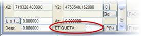
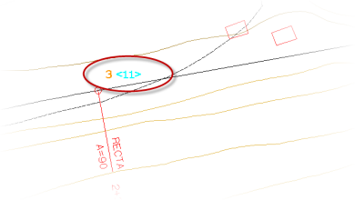
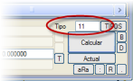
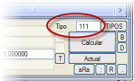
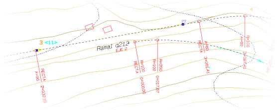
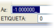
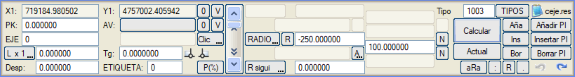
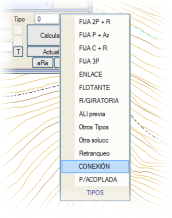

| |
|
YATAY GÜZERGAH: EKSENLER ARASI BAĞLANTILAR
|
Genel Bilgiler Yatay güzergahta eksenler arasında bağımlılıklar bildirmek mümkündür. Zorunlu bir adım olmasa da, şiddetle tavsiye edilir, çünkü eksenler arasında bu ilişkiler kurulduğunda güzergahın matematiksel kesinliği garanti altına alınır ve ayrıca, bir ana eksende meydana gelen geometrik değişiklikler, tüm bağımlı eksenlerinin otomatik olarak yeniden hesaplanmasını tetikleyerek kullanıcıya çok zaman kazandırır. Program, iç içe geçmiş bağımlılıkları destekler, yani bir eksene başka bir eksen bağlı olabilir ve bu eksene de üçüncü bir eksen 'asılı' olabilir ve bu şekilde devam eder. ISTRAM®/ISPOL®, bu bağımlılıkları bildirmek için iki tür özel güzergah elemanına sahiptir: etiketler ve bağlayıcılar, ikincisi çeşitli varyantlar sunar. Bu özel elemanlar, işleyiş açısından tamamen sabit güzergah elemanları gibi davranır, bağımlı eksende bildirilir ve normalde o eksenin birinci ve/veya sonuncusu olurlar. İki tür eleman arasındaki temel farklar şunlardır:
Öte yandan, mevcut bağlayıcı tipleri, belirli senaryolarda kullanımlarını çok esnek hale getirir. Örneğin, branşın çıkış noktasındaki ana yolun yarıçapını otomatik olarak hesaplayan ve ilgili azimutu benimseyen bağlayıcılar vardır, bu da onları ana yolun bir klotoidinden doğan branşlar için ideal kılar.
Her durumda, kullanıcı eksenler arasındaki bağımlılık koşulunu göz önünde bulundurmalıdır: İki eksen arasındaki bir bağlantıda, ana eksen görevi gören eksen numarası, bağımlılığın kurulduğu eksenden (ikincil eksen) her zaman daha küçük olmalıdır. Bu, yalnızca eksenleri Etiketlerle bağlama durumu için geçerlidir.
Bağlayıcıların kullanımı, eksenlerin numaralandırılmasından etkilenmez. Böylece, bir kavşakta ana yol görevi gören eksen 3 numara ve branş 2 numara ise, yatay güzergahta bağlantı kurulamaz, ancak branşın 3'ten büyük bir numarası varsa mümkün olurdu. (Sadece bağlantının Etiketlerle tanımlandığı durum için geçerlidir) Burada etiketlerin ve bağlayıcıların işleyişi detaylı olarak açıklansa da, özellikle deneyimsiz kullanıcılar için, hem etiketlerin hem de bağlayıcıların işleyişlerinin inceliklerini bilmeye gerek kalmadan kullanılmasını sağlayan eksenler arası yardımlı bağlantılar menüsünü kullanmaları tavsiye edilir. Etiketler Etiketler aracılığıyla eksenler arasındaki bağımlılıklar, ikincil eksenin başlayacağı ana yolun güzergah elemanını bir numara (11 ile 99 arasında) ile tanımlamaktan ibarettir. Bu, o elemanın ETİKET alanında yapılır. Ana yolun etiketlenmiş elemanı bir doğru ise, branşa aktarılan veriler ana başlangıç noktası ve o noktadaki eksenin azimutudur. Bir kurp durumunda, merkezi aktarılır. Yani, davranış açısından etiket, branşta bir doğru durumunda tip 5 merkez ve azimut ile sabit veya bir dairesel kurp durumunda merkez ve yarıçap ile sabit bir eleman gibi çalışır. Etiketlenmiş bir güzergah elemanı, grafik ekranda eleman numarasının yanında değerini gösterir: 
Branşın 'başlayacağı' veya ulaşacağı ana yolun elemanı etiketlendikten sonra, o ikincil ekseni o etikete referanslamak ve böylece bağımlılığı kurmak artık mümkündür. Bunun için bir yardımlı bağlantı (daha rahat) veya aşağıda detaylandırıldığı gibi manuel bir bağlantı bildirmek mümkündür. Ana yolun etiketlenmiş bir elemanına manuel olarak bir referans bildirmek için, branşın ilgili elemanı (normalde birinci veya sonuncu) etikete atanan numara tipinde olacaktır. Örneğin, eğer ana yolun elemanı <11> olarak etiketlenmişse ve ondan bir branş ekseni doğuyorsa, o branşın ilk elemanı tip <11> olacaktır.:  Etiketle yatay güzergahta bağlantı, branş ana yolun özel noktasından 'doğarak'
 Eğer TİP, başka bir elemanın etiketine karşılık gelen 111 ile 199 arasında bir değerse, öyle ki “Etiket + 100 = Tip” ise, sistem elemanın gelişiminin sıfır olduğunu anlar (ki bu normaldir). Böylece, bir branşı başlatmak için bir doğru ise, çözüm sıfır uzunlukta, bitiş noktasına indirgenmiş olarak kalır; o noktada yeni eksenin 2. elemanı başlar. Benzer şekilde, bir ekseni başlatan veya bitiren bir dairesel kurp durumunda, gelişimini sıfırlamak için azimutu aramak gerekmez: 
Etiketle yatay güzergahta bağlantı, branş ana yola teğetlik noktasından 'doğarak'
Ana yolun bir doğru elemanından çıkan branş Branşın bağlantıdaki KM gelişimi, KM'lerin ters yönünde ise, Az alanına herhangi bir negatif değer girilmelidir, bu da bağlantının dolaşım yönünü orijinal yöne göre tersine çevirir. Öteleme (Öte), branş ekseninin ana yola göre normal mesafesini belirtir. Örneğin, ekseni dıştan tanımlanmış ve şerit başına 3,5 m genişliğinde bir yoldan çıkan bir branşta, öteleme 7 m olacaktır.
Ana yolun bir dairesel elemanından çıkan branş Ana yoldan çıkış elemanı bir dairesel kurp ise, aktarılan veri merkezdir ve bu nedenle ötelemeyi belirtmek için yarıçap kullanılır, öyle ki bu, branşın aynı elemanında, ana yola etiketle referansın bildirildiği yerde de bildirilmelidir. Branşın bağlantıdaki KM gelişimi, KM'lerin ters yönünde ise, o zaman yarıçap, ana yolun referans elemanının yarıçapının ters işaretiyle bildirilmelidir, bu da bağlantının dolaşım yönünü orijinal yöne göre tersine çevirir. Eğer bir öteleme verilmek isteniyorsa, bu yarıçapa eklenir veya çıkarılır, öyle ki eğer bu, ana yolun elemanından daha küçükse, yeni eleman içte eş merkezli ve aksi takdirde dışta olur. Öte alanında bildirilen değer bu durumda hesaplayıcı tarafından göz ardı edilir; ancak bu eleman eksenin sonuncusuysa uzunluk kullanılır (tip 5 merkez ve yarıçap ile sabit bir eleman gibi davranır). Bağlayıcılar Bağlayıcılar, branşları önceden var olan eksenlere bağlamak için kullanılan özel bir tür güzergah elemanıdır ve demiryolları durumunda makasların konumlandırılmasına olanak tanır. Dikkate değer bir faydası, bir branşı klotoidler de dahil olmak üzere herhangi bir noktada bir eksenden ayırmak, eksene paralel veya belirli bir açıyla çıkmaktır. Aşağıdaki türler mevcuttur:

Her durumda, bağlayıcılarla bağımlılığı kurmak, manuel yerine bir yardımlı bağlantı bildirerek daha kolaydır. Eksenler arası yardımlı bağlantılar  ISTRAM®/ISPOL®, etiketler ve bağlayıcılar aracılığıyla eksenler arasındaki bağımlılıkları, bunların tüm işleyiş kurallarını hatırlamaya gerek kalmadan basit bir şekilde bildirmeyi sağlar. Bunun için, bu tür bir güzergah elemanı bildirirken, [TİPLER] düğmesine gidip BAĞLANTI'yı seçmek yeterlidir. Daha sonra, başka bir eksenle bağlanan elemanın parametrelerini, ya bağlayıcılar (veya makaslar) ya da etiketler kullanarak tanımlamayı sağlayan bir iletişim kutusu açılır. Bu kutu, yatay güzergahtaki bağlantıların (etiketler ve bağlayıcılar) bildirimini büyük ölçüde basitleştirir, çünkü kullanıcının bu özel türdeki elemanlarla ilişkili tüm özellikleri hatırlamasını önler ve bu nedenle eksenler arası bağlantıların bildirilmesi için önerilen alternatiftir.
|